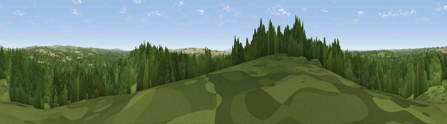

Viewpoint near Newtown
#40062 in England · top 66% of its area beats it · near Newtown · open accessWhere it is
The exact computed spot (SU 60125 12575). Click the marker for map links.
Public access: this spot lies on mapped open-access land (CRoW Act 2000) — you may roam here on foot. Computed from Natural England's CRoW access layer and OpenStreetMap rights of way — not the legal definitive map. Always verify locally.
The view, rendered

A 360° render of this exact spot computed from the terrain model, tree cover and land cover — summer colours, afternoon light, calibrated against photographs of famous viewpoints. Real trees, hedges and buildings will differ in detail.
The panorama
Grey silhouette: terrain skyline in each direction (720 bearings, Earth curvature and refraction included). Dashed green: skyline with trees (+15 m) and buildings (+8 m) as obstacles. Blue strip: how far the ground is visible on each bearing.
Where the view opens
Wedge length = distance to the farthest visible ground on that bearing (vegetation-aware). Rings at 10, 25 and 50 km.
What fills the view
75% woodland · 18% grassland · 6% cropland · 1% built-up
Angular shares of the visible panorama (visual magnitude), not map area. Landscape diversity 0.33 (0–1 Shannon).
Key numbers
More beautiful places nearby
The staircase of upgrades: each row has a higher view potential than everything closer. Driving times are estimates from straight-line distance, calibrated against real road routing — check an actual route before setting out.
| Place | Direction | Drive | Score |
|---|---|---|---|
| Viewpoint near North Boarhunt | SW · 1 km | ~3 min | 28.5 |
| Crockerhill | SW · 3 km | ~8 min | 44.2 |
| Home Down | NE · 5 km | ~11 min | 49.5 |
| Viewpoint near Droxford | N · 6 km | ~12 min | 58.5 |
| Viewpoint near Southwick | SSE · 7 km | ~14 min | 74.3 |
| Viewpoint near Southwick | SE · 7 km | ~15 min | 76.6 |
| Viewpoint near Buriton | ENE · 14 km | ~25 min | 80.0 |
| Beacon Hill | ENE · 21 km | ~36 min | 85.8 |
50.90952, -1.14620 · source: screening · position refined by local search. Computed location — check access rights before visiting.